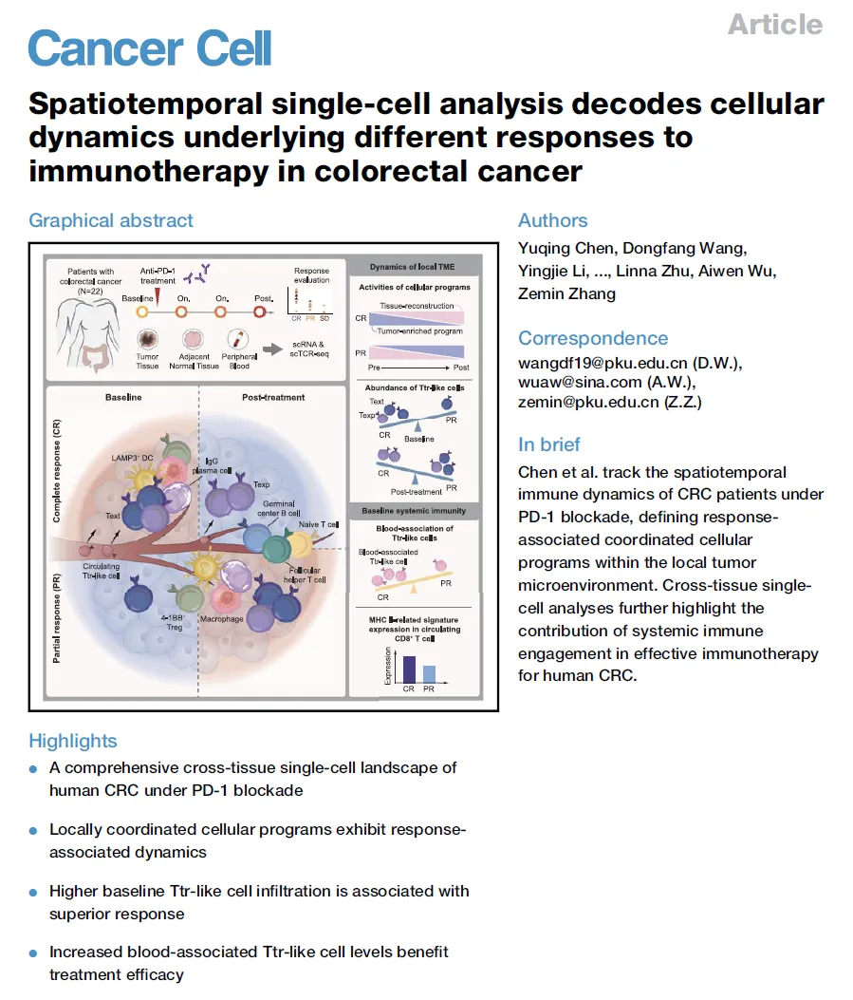
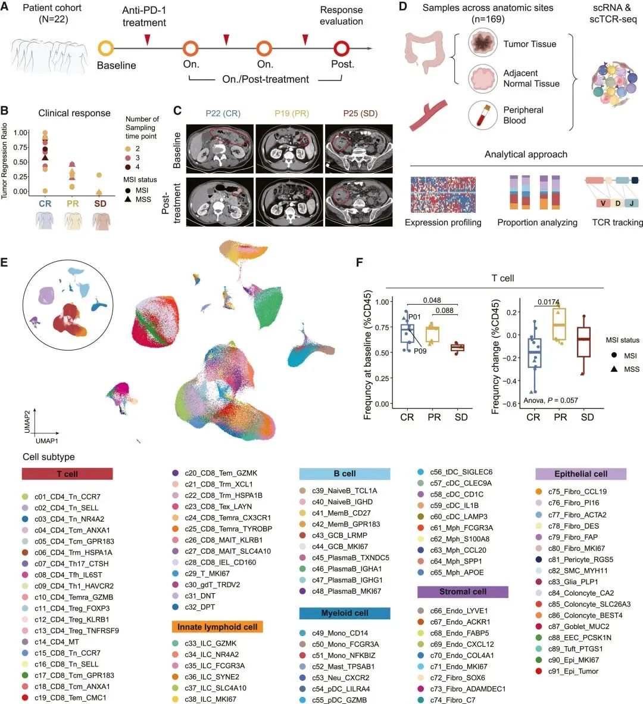
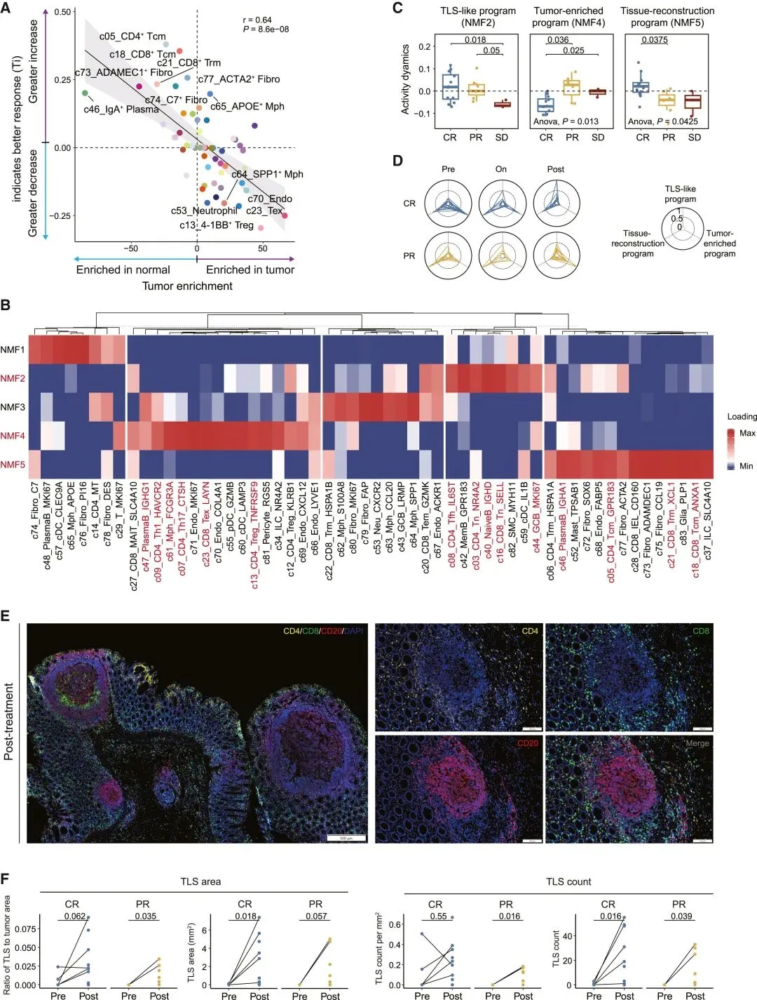
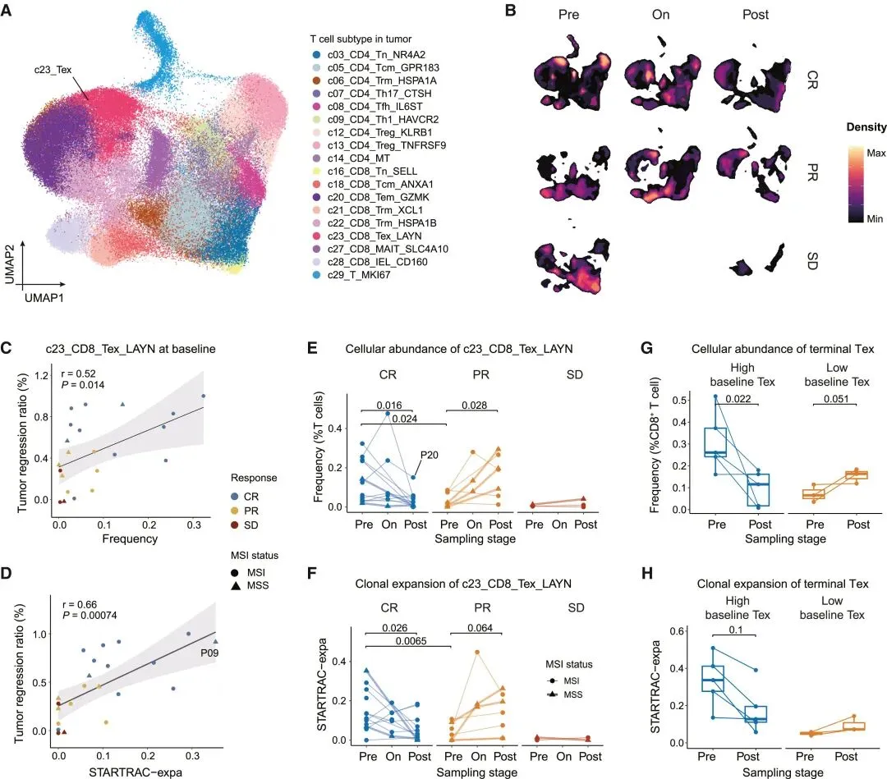
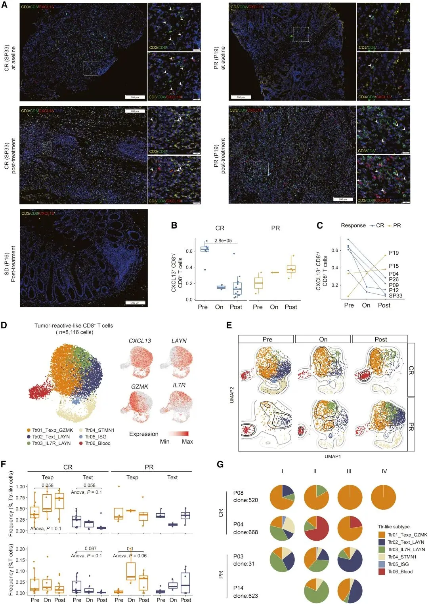
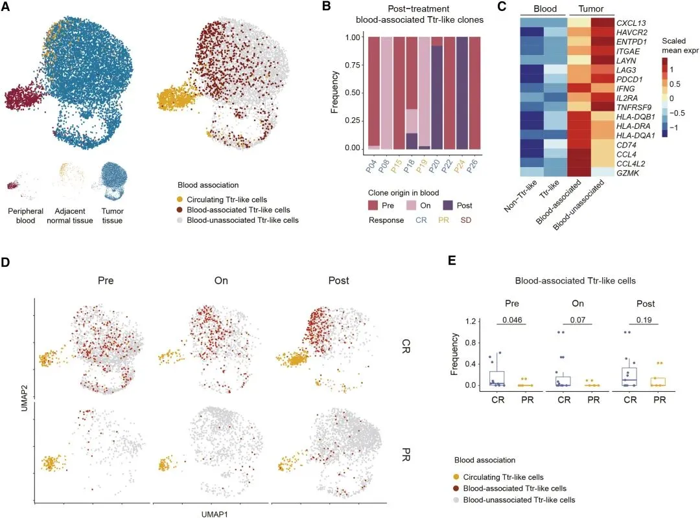
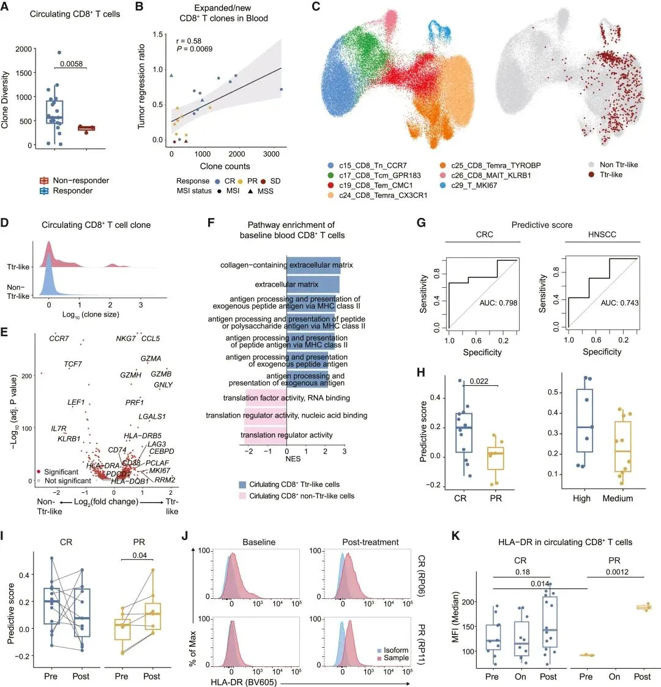
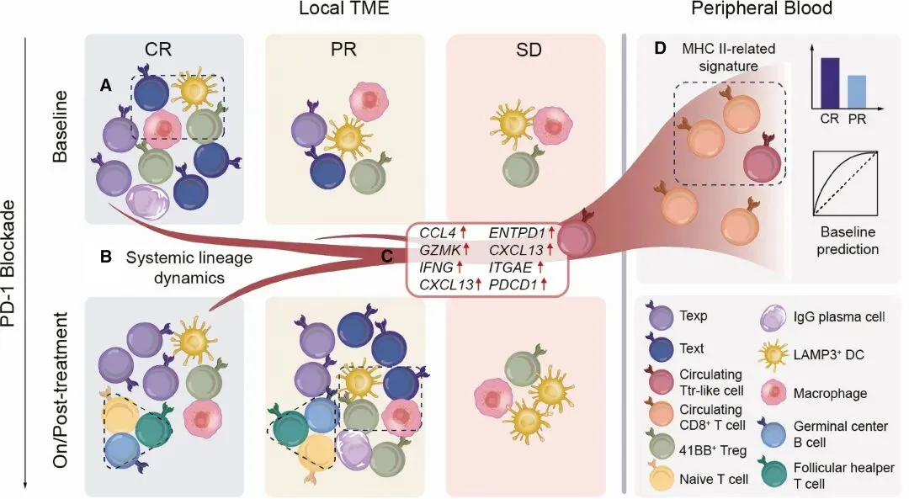
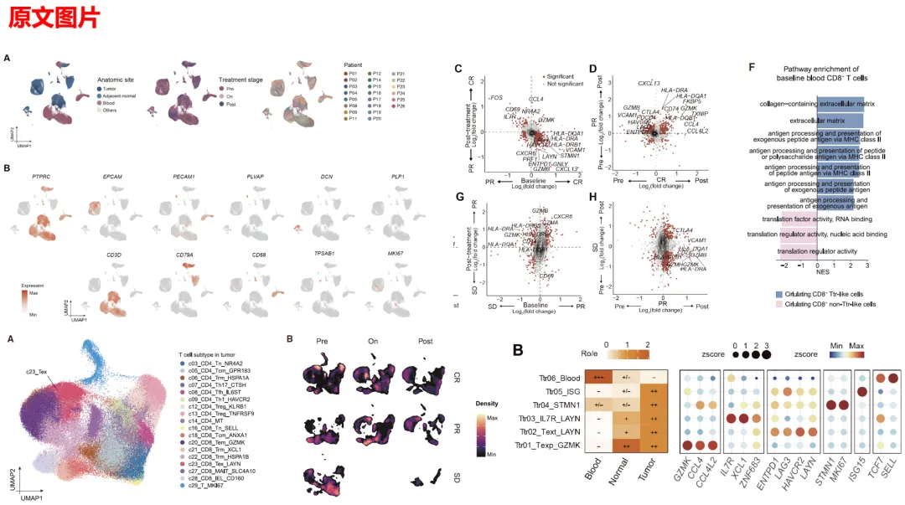
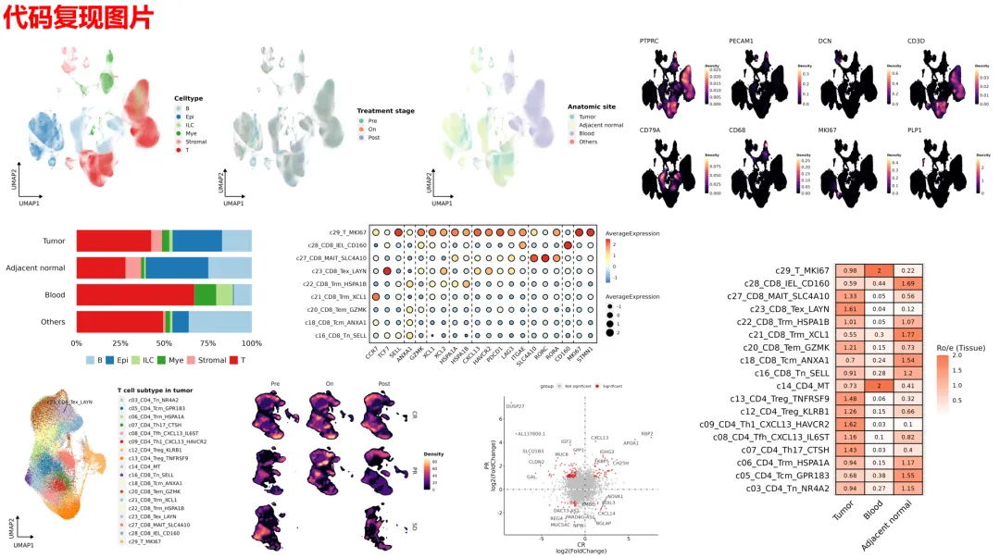

《Cancer Cell》|时空单细胞分析揭示结直肠癌免疫治疗不同反应的细胞动态
原文：https://mp.weixin.qq.com/s?__biz=MzAwMzIzOTk5OQ==&mid=2247529906&idx=1&sn=6b666cb8cf3c8e85ff73c9c24e546c60&chksm=9b3c0ce2ac4b85f4a308e62b84932bb66e295a88d817d03f9883903667ac14a04f8b615b8cad#rd 合集：文献速递
一、写在前面
本次分享的是2024年06月发布于《Cancer Cell》（IF=48.8）的文章****，我们也对该文进行了代码复现： 《Cancer Cell》|时空单细胞揭示CRC的PD-1治疗免疫细胞动态。****感兴趣的同学可以看看原文： Yuging Chen,Dongfang Wang, Yingjie Li,,et al."Spatiotemporal single-cell analysis decodes cellular dynamics underlying different responses to immunotherapy in colorectal cancer" ，Cancer Cell, 2024 Jun .DOI:https://doi.org/10.1016/j.ccell.2024.06.009

扩大免疫检查点阻断（ICB）在结直肠癌（CRC）中的疗效迫切需要全面了解治疗反应。在这里，我们分析了 22 名接受 PD-1 阻断的患者的多个连续单细胞样本，以绘制 CRC 患者局部和全身免疫的演变图。在肿瘤中，我们发现了表现出不同反应关联的协调细胞程序。具体而言，耗竭的 T (Tex) 或肿瘤反应性样 CD8+ T (Ttr 样) 细胞与治疗效果密切相关，并且在 PD-1 阻断后，Tex 细胞与多种其他肿瘤富集细胞类型显示出相关的比例变化。此外，我们揭示了肿瘤中血液相关 Ttr 样细胞的较少耗尽表型，并发现它们的丰度较高表明治疗结果更好。最后，基线时循环 CD8+ T 细胞中较高的主要组织相容性复合体 (MHC) II 相关特征与优异的反应相关。我们的研究提供了对 CRC 新辅助 PD-1 阻断后时空细胞动力学的见解。
如果需要数据分析指导 、生信热点全文复现 、自测数据个性化分析 辅导、常态化实验学习，欢迎联系客服微信[Biomamba_zhushou]
二、主要内容
1.PD-1 阻断后人类 CRC 的动态单细胞跨组织景观
研究通过追踪22名CRC患者在接受新辅助抗PD-1免疫治疗过程中的免疫细胞动态，结合单细胞RNA测序（scRNA-seq）和单细胞TCR测序（scTCR-seq），揭示了治疗对肿瘤微环境（TME）的影响，并分析了不同免疫细胞群体与临床反应（包括完全响应[CR]、部分响应[PR]和稳定病情[SD]）的关系。首先，研究展示了患者的治疗过程和随访情况（图1A）。临床反应通过MRI图像确认，图中红圈标注了肿瘤区域，显示了治疗前后的变化（图1C）。在治疗前，患者的临床特征被详细总结，并通过肿瘤回归量化了不同反应组的治疗效果（图1B）。实验设计包括从外周血、邻近正常组织和肿瘤组织采样，并结合免疫细胞分析，系统评估了治疗前后免疫细胞的变化（图1D）。此外，研究通过UMAP图展示了精细的细胞群体划分，包括T细胞、B细胞、髓系细胞等，并揭示了它们在不同组织（肿瘤、邻近正常组织、外周血）中的分布模式（图1E）。针对T细胞的动态变化，图1F展示了治疗前后肿瘤组织中T细胞的比例及其随时间的变化，揭示了不同治疗反应组中免疫细胞的特异性动态变化。

Fig.1
2.肿瘤生态系统中协调的细胞程序
研究通过对肿瘤微环境（TME）中细胞群体的动态变化进行分析，揭示了抗PD-1治疗引发的多个细胞程序的协同作用，并探讨了这些程序与治疗反应的关系。首先，研究使用线性回归方法计算了每个细胞类型的治疗指数（Ti）和基础指数（Pi），并发现多个肿瘤富集细胞类型（如Tex、4-1BB+ Treg和c70_Endo）在治疗后的丰度下降与良好的治疗反应相关，而一些正常富集细胞（如c05_CD4_Tcm_GPR183和IgA浆细胞）则呈现相反趋势（图2A）。这一发现促使研究进一步探索了不同细胞群体的协同作用，采用非负矩阵分解（NMF）方法，鉴定了与治疗反应相关的五个细胞程序（图2B），包括”TLS样程序”、“组织重建程序”和”肿瘤富集程序”等。在治疗反应的不同状态下，研究发现TLS样程序在反应者中的活性增加，且通过多重免疫荧光染色确认，完全反应（CR）和部分反应（PR）患者的TLS区域和数量增加（图2E、2F）。而CR患者的组织重建程序信号较强，肿瘤富集程序信号较弱，表明在肿瘤消除的同时，正常组织样环境得到了重建；而PR患者则表现出相反的动态变化（图2C、2D）。此外，针对不同微卫星不稳定（MSI）和微卫星稳定（MSS）患者的分析发现，MSS患者在治疗前就表现出较高的组织重建程序活性和较低的肿瘤富集程序活性，提示MSI患者的免疫反应可能较为广泛（图S3H）。这些结果表明，抗PD-1治疗引发了TME中细胞群体的动态变化，这些变化与治疗反应的不同维度密切相关。

Fig.2(3)肿瘤中耗尽的CD8+ T细胞的反应关联
研究进一步探讨了肿瘤内耗竭型CD8+T细胞（Tex细胞）在抗PD-1治疗中的动态变化及其与治疗反应的关系。通过分析肿瘤富集程序（NMF4），发现Tex细胞在该程序中的加载值最高，表明Tex细胞在治疗反应中的重要作用。研究通过训练分类器，发现Tex细胞在CR患者中的比例变化与治疗效果高度相关（图3A）。Tex细胞的标志基因如PDCD1、LAYN、ENTPD1和HAVCR2的表达也在CR患者中较为显著（图3A、S4A），进一步确认了Tex细胞在治疗中的关键作用。临床数据分析表明，CR患者肿瘤中的Tex细胞比例显著高于PR患者（图3B、S4B），且Tex细胞的比例与克隆扩展程度与肿瘤退缩存在正相关（图3C、3D）。CR患者的肿瘤中，Tex细胞在治疗后逐渐减少，并伴随克隆扩展程度的下降，这表明有效的抗肿瘤免疫反应会导致Tex细胞的衰退（图3E、3F）。然而，PR患者则表现出Tex细胞的数量增加，并且克隆扩展程度较强，表明治疗刺激了有效的免疫反应。在NSCLC的验证分析中，发现与CR或PR信息不明确的肿瘤相比，Tex细胞在基线时比例较高的肿瘤，在PD-1阻断后呈现明显的减少趋势，而基线比例较低的肿瘤则呈现显著增加（图3G、3H）。这些结果表明，Tex细胞的动态变化是治疗反应的重要标志，且不同患者群体中，Tex细胞的演变路径与治疗反应的强度和类型密切相关。

Fig.3(4)PD-1阻断期间肿瘤反应样CD8+ T细胞的不同动态反映了治疗效果
通过分析肿瘤内反应性类CD8+ T细胞（Ttr-like细胞）的动态变化，揭示了其在PD-1阻断治疗中的治疗反应差异。研究通过转录组分析和TCR序列追踪，发现Ttr-like细胞是从Tex细胞中衍生而来，且其表达CXCL13的特征与肿瘤反应性T细胞（MANA-specific）相似。Ttr-like细胞在不同患者的肿瘤中表现出不同的频率动态，并与治疗反应密切相关（图S5E–S5H）。在CR患者中，基线时CXCL13+CD8+细胞的数量较多，而SD患者则显示了Ttr-like细胞的缺乏（图4A–C）。这些发现支持了Ttr-like细胞在PD-1治疗中的重要作用。研究进一步分析了Ttr-like克隆的演变模式，将其分为四类：1) 新出现的克隆，2)克隆数量增加的克隆，3)克隆数量减少的克隆，4)基线时仅检测到的克隆。结果显示，CR患者中大量为4类克隆，而PR患者则以新出现的克隆为主（图S5I），表明治疗通过招募新克隆以及扩大现有克隆的数量来加强免疫反应。在转录组分析中，研究发现Ttr-like细胞可以分为多个亚群，如Ttr01（低耗竭、Texp细胞）和Ttr02（终末耗竭、Text细胞），其中Ttr01细胞在PR患者中增加，而Ttr02细胞在CR患者中减少（图S6B、4E、4F）。这些亚群的动态变化反映了PD-1阻断在不同治疗反应组中的免疫细胞转化过程。在PR组，Texp和Text细胞显著增加，而CR组则表现为Texp细胞的增加和Text细胞的减少（图4E、4F）。这些动态差异表明，治疗在不同反应患者中的免疫恢复过程存在显著不同。在NSCLC患者中，类似的动态变化也得到了验证，表明Ttr-like细胞在治疗过程中存在相似的免疫反应模式（图S6H、S6I）。这些结果表明，在有效的治疗下，Ttr-like细胞群体经历了增强，其中Texp细胞停止向终末耗竭转化，而在部分反应的情况下，PD-1阻断促进了Texp和Text细胞的积累。

Fig.4(5)有效治疗干预下肿瘤反应样CD8+ T细胞的外周关联
研究通过对肿瘤微环境（TME）中CD8+T细胞群体的动态变化进行分析，揭示了抗PD-1治疗引发的肿瘤反应性类CD8+T细胞（Ttr-like细胞）在不同治疗反应中的外周免疫调节作用，并探讨了这些细胞的动态变化与治疗反应的关系。首先，研究通过单细胞RNA测序（scRNA-seq）和TCR测序（scTCR-seq），追踪了血液和肿瘤组织中的Ttr-like细胞，发现血液相关Ttr-like细胞在治疗过程中较早出现在血液中，并且在肿瘤微环境中表现出较低的免疫耗竭状态，与较好的治疗反应相关（图5A、图5B）。此外，研究进一步分析了血液相关Ttr-like细胞与肿瘤内非血液相关Ttr-like细胞的表型差异，发现血液相关Ttr-like细胞表达较高的GZMK和CCL4等抗肿瘤因子，并且在治疗后维持较高的免疫活性（图5C）。这些结果表明，PD-1阻断治疗可能通过促进血液相关Ttr-like细胞的积累和激活，强化了肿瘤免疫反应，尤其是在完全缓解（CR）组患者中，血液相关Ttr-like细胞在治疗后持续存在（图5D、图5E），而在部分反应（PR）组患者中则较为稀缺。

Fig.5(6)外周 T 细胞特征表明对 PD-1 阻断的反应
研究通过分析外周免疫细胞的特征，揭示了这些细胞与PD-1阻断治疗反应的关系。首先，研究发现大多数血液富集细胞群体的丰度在不同治疗反应组间变化较小，且与肿瘤回归的相关性较弱（表S3）。然而，某些细胞群体与治疗反应相关，例如基线时髓系细胞群体中的c50_Mono_FCGR3A细胞丰度较高与较好的肿瘤回归相关（图S7H）。研究将重点转向CD8+T细胞，发现治疗后反应组（CR和PR患者）和非反应组（SD患者）间外周CD8+ T细胞克隆多样性存在显著差异，且非反应组的多样性较低（图6A）。同时，治疗后扩增的CD8+T细胞克隆数与肿瘤回归呈正相关（图6B）。研究还发现，血液中的肿瘤反应性类CD8+T细胞（Ttr-like细胞）在治疗后的克隆大小较大，且表现出较高的细胞毒性、白细胞招募、增殖和抗原呈递基因表达（图6E、图S7K）。进一步分析发现，MHCII相关基因在Ttr-like细胞中的富集优于其他外周CD8+T细胞（图6F、图S7L）。基于MHC II相关基因，研究构建了预测评分，该评分能够有效区分基线时CRC患者的CR和PR组（AUC=0.798），并在外部头颈鳞状细胞癌（HNSCC）数据集中也显示了良好的预测能力（AUC=0.743）（图6G、6H）。此外，研究还跟踪了部分反应者的外周CD8+T细胞，发现预测评分在治疗后显著升高（图6I）。综上所述，外周血液中的CD8+ T细胞特征可以为PD-1阻断治疗的反应提供重要的非侵入性预测指标。

Fig.6
Fig.7三、复现集锦
我们复现了其中的主要图表（复现过程可见：代码复写| 结直肠癌免疫图谱中的基因表达程序），注意我们重在复现思路流程的代码 ，由于版本环境和随机数等问题，我们并不能保证复现结果100%与原文一致：

大群分析
细胞UMAP降维图，Marker密度图，火山图
T细胞亚群分析
亚群UMAP图，细胞密度图，Ro/e分析，Marker气泡图，富集分析代

四、学习手册
对空间转录组、scRNA-seq分析及联合分析感兴趣的同学可参考：空间转录组学习手册合辑scRNA-Seq学习手册Seurat V5更新版一文搞定空间转录组与单细胞测序的整合分析CellChat空转细胞通讯合辑
如何联系我们

 留一个领取资料、开箱即用的单细胞分析镜像的微信号[Biomamba_zhushou]，方便各位随时交流。同时我们也构建了交流群矩阵，欢迎大家入群讨论。
大家可以阅读完这几篇之后添加给生信入门初学者的小贴士
没有检索，就没有发言权
留一个领取资料、开箱即用的单细胞分析镜像的微信号[Biomamba_zhushou]，方便各位随时交流。同时我们也构建了交流群矩阵，欢迎大家入群讨论。
大家可以阅读完这几篇之后添加给生信入门初学者的小贴士
没有检索，就没有发言权
已有生信基地联系方式的同学无需重复添加

 您点的每个赞和在看，我都认真当成了喜欢
您点的每个赞和在看，我都认真当成了喜欢